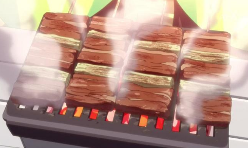

Grilled Meat

Description
Grilled meat was cooked in episode 7 of Laid-Back Camp.
Rin and Nadeshiko made this meal during a camping trip at Lake Shibire, where a legendary cow spirit resides.
This savory dish is quick to make, and the marinade reminds one of Japan (*^▽^*)
Ingredients
- 4-6 pork belly kabobs
- 3 tbsp shoyu
- 1 tbsp mirin
Steps
- Marinate the pork belly kabobs in shoyu and mirin for 30 minutes to an hour
- Grill the meats on your equipment of choice, turning the skewers every few minutes
- Cook until the meat is a nice brown, and you're done!